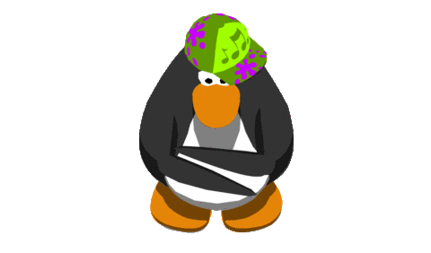
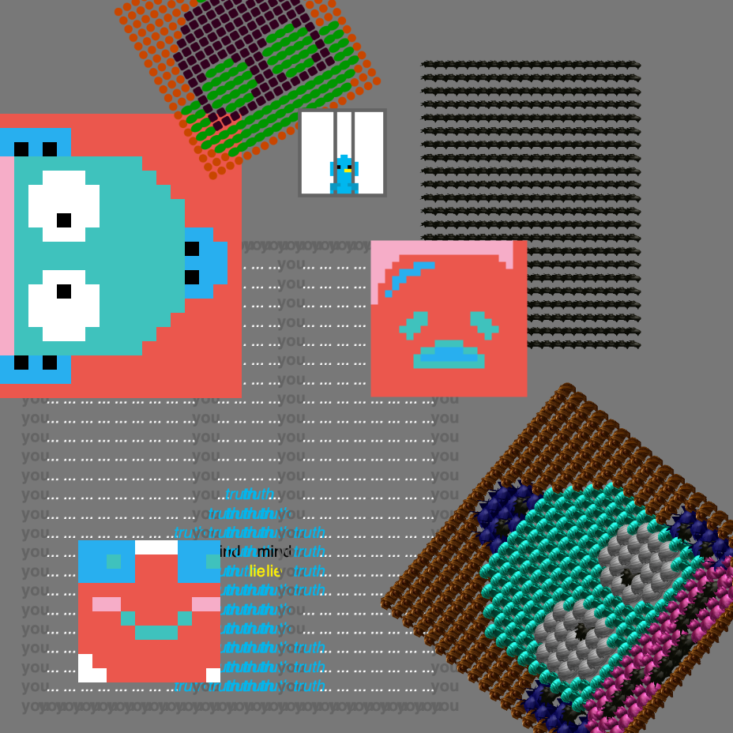

Mini Project 3: Intro to Data & GridArray Mapping
To the right is an image of Phase 1 of this mini project. There are examples of 2 distinct 20x20 2D GridArrays. The text array is larger as it's 25x25. These arrays have been mapped three different ways by utilizing different shapes, images, and transparancies. Across six total images, this project transforms raw data into abstract poetry, examining how structure, repetition, and representation can evoke shifting emotional states.
I created at least 8 custom functions to remap my two arrays. The gridarray was done with numbers as a way to store data. In some instances, it represented different colors. I utilized the a 3D text array to convey meaning. Essentially, it's supposed to symbolize a bird being trapped in it's cage due to it's own fault. I have a total of 21 mapped images, many of them overlapping each other to resemble a new image. Jasmine and Laura were on my team. Jasmine provided the Gudatama (lazy egg) array and Laura provided the Keropi (frog) array. A dirct link can be found on the left and can also be accessed if image pressed.
Run Mini Project 3